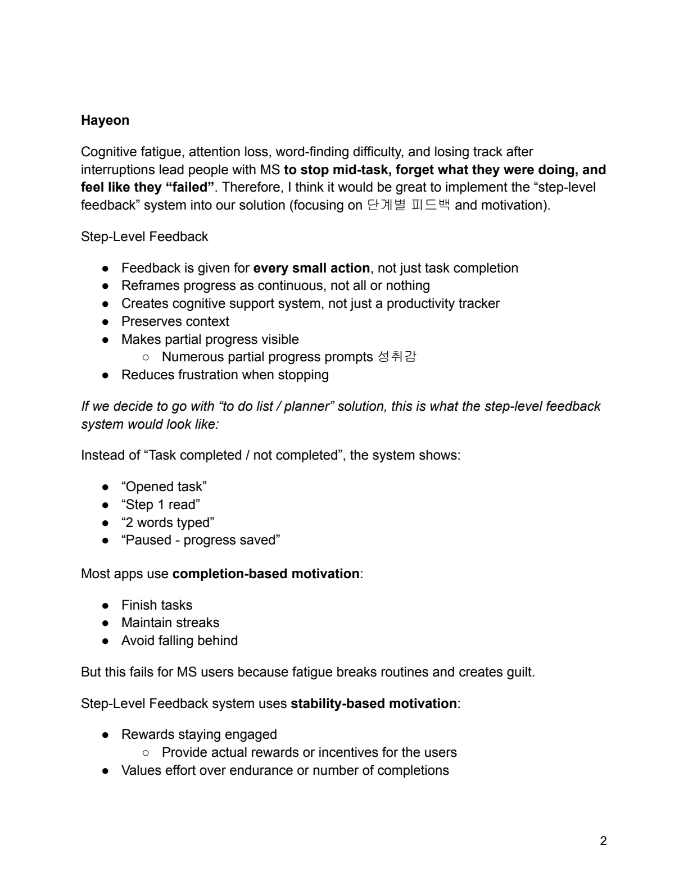
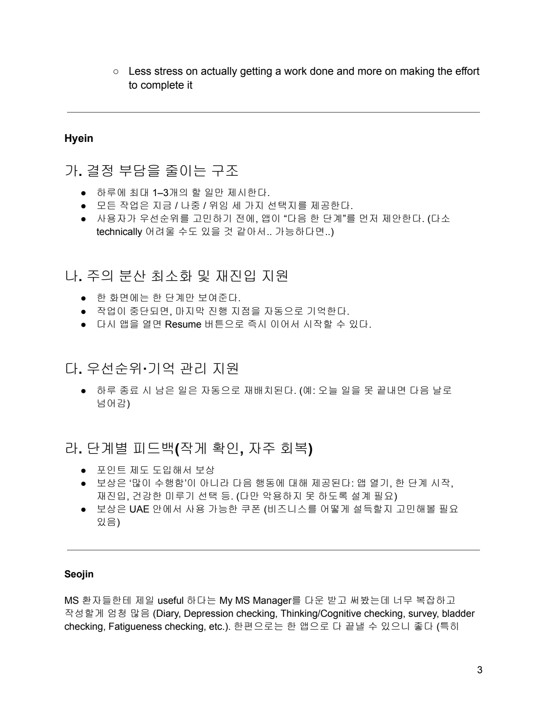
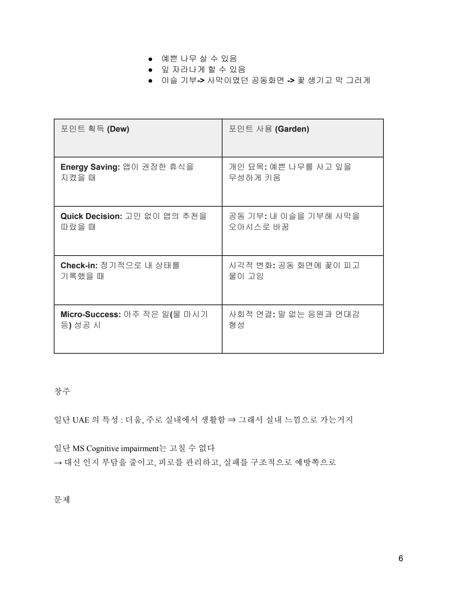
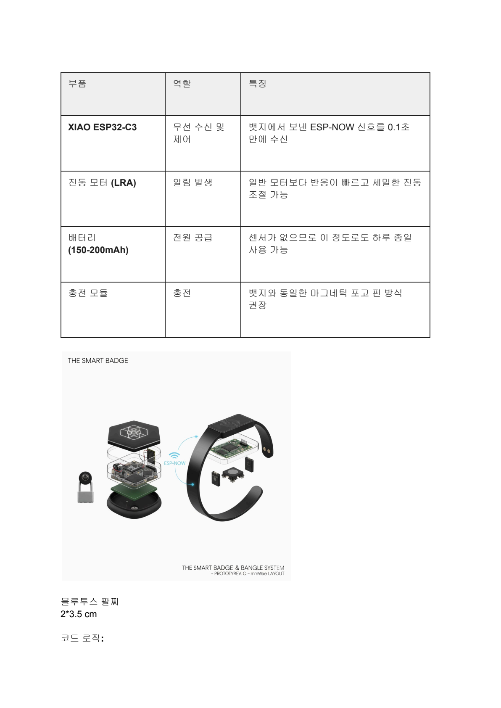
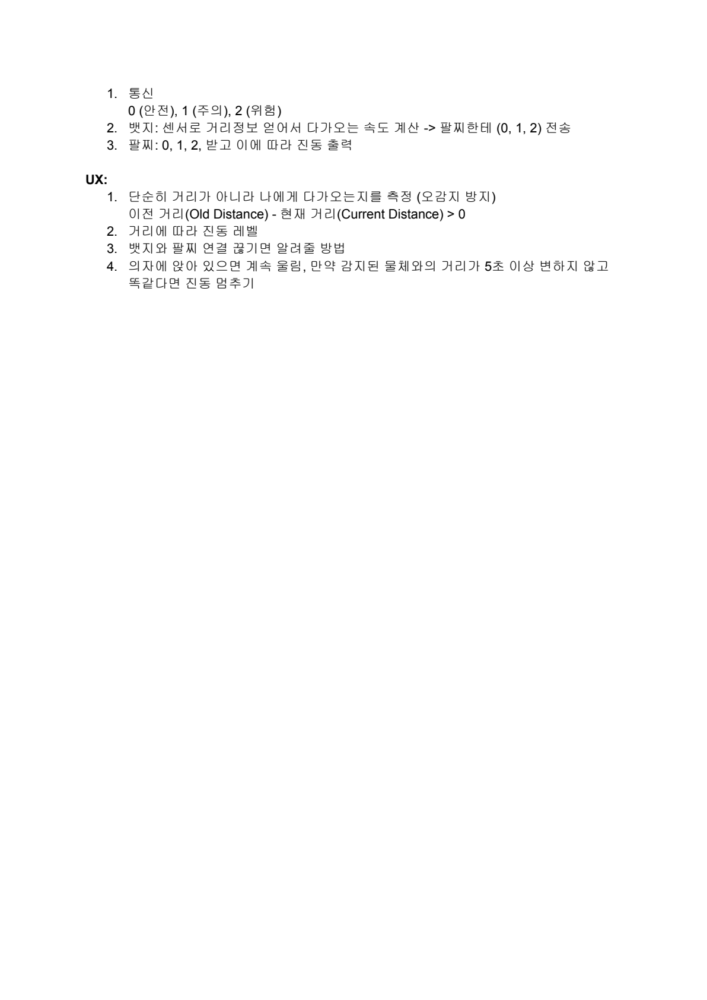

Passive over demanding
The concept became better once assistance no longer depended on constant checking, reading, or explicit input from the user.
Build archive / assistive prototype / 2026
A wearable assistive badge and companion app that translates approaching movement and nearby danger into tactile alerts.
What I like about this project is how clearly it shows my thinking process. We started inside a much wider accessibility research space, exploring communication barriers, cognitive overload, and support systems for People of Determination in the UAE. The final concept got stronger when we stopped trying to solve everything and focused on one urgent moment of awareness that could be made passive, discreet, and buildable.

Aman-Hiss is a wearable assistive concept submitted to the NMSS Universal Design for Inclusion Program. The final proposal is a small badge worn at the back of the body, paired with a phone, that quietly monitors what is happening behind the wearer and communicates risk through vibration.
The final target user was someone who cannot rely on hearing to notice approaching people, vehicles, or sudden nearby danger. What made the concept feel compelling was that it did not ask the user to keep checking a screen, wear something visually intrusive, or constantly turn around to feel safe.
The project did not start with the badge. It began with a much wider research scan across communication and cognition. Our early notes focused on multiple sclerosis, speech difficulty, word-finding issues, fatigue, interruptions, and the way too much decision-making can make even simple tasks harder to complete.
That research pushed us toward ideas like planning support, step-level feedback, gamification, and easier re-entry after a task is interrupted. Those concepts were useful because they exposed a core principle: if a support system adds more reading, more typing, or more attention management, it can become one more burden instead of real help.

Early direction
One strong idea was reframing progress at the level of tiny recoverable actions instead of all-or-nothing task completion.

What I was tracking
My notes centered on reducing decision burden, minimizing attention shifts, and making it easy to resume after interruption.
The breakthrough came when the team stopped treating inclusion as a huge abstract space and started asking which moment needed the clearest intervention. We moved away from a screen-heavy planner direction and toward passive awareness: one signal, one behavior, one immediate safety benefit.
That shift made the concept stronger on three levels. First, it lowered the cognitive demand because the user would not need to manage a complex interface in the moment. Second, it created a more urgent and visible use case for the competition. Third, it made the build more realistic inside the time we had, because the interaction logic could stay simple and tactile.
The concept became better once assistance no longer depended on constant checking, reading, or explicit input from the user.
Narrowing to behind-the-body awareness gave the project a clearer problem, a clearer interaction, and a clearer build story.
Even after the pivot, the earlier research still mattered: reduce burden, avoid overload, and support safety without making the product feel demanding.

The GitHub build made the final system very concrete. Aman-Hiss has two parts: the badge hardware and the phone software. The badge uses an LD2410 radar sensor to detect distance to an approaching target, then broadcasts that distance through a BLE connection. On the phone side, a browser-based interface receives the value through Web Bluetooth and translates it into vibration timing.
What matters in the interaction is not just detection, but interpretation. The closer the object is, the shorter the vibration interval becomes. In the repo, that logic is expressed as distance multiplied by five milliseconds, creating a tactile signal that feels progressively more urgent instead of simply on or off.

The component planning page helped the build feel real rather than speculative. It clarified the roles of the controller, vibration motor, battery, charging module, and the wearable form itself.
I especially like that this page shows the project as both a system and a physical object. It is not only an interface. It is a spatial, embodied interaction that depends on placement, comfort, discreteness, and quick tactile understanding.
The badge continuously tracks nearby approach and treats environmental awareness as background support rather than a request the user has to make.
The phone acts as the interpretation layer, pairing with the badge, handling alerts, and supporting emergency response when needed.
The vibration pattern increases with urgency, so information is felt progressively instead of arriving as one generic warning.

The demo and presentation are where the concept becomes easiest to understand. They show the pairing flow, the emergency-call support, and the scenario logic behind the badge: an approaching runner or a nearby honk becomes a vibration cue the wearer can react to immediately.
Together with the repo, these videos complete the archive entry by showing the project as a research story, a physical build, and a working interaction concept.
Demo video
A short walkthrough of the interaction and how the concept behaves in use.
Presentation video
The final presentation that frames the concept, the user need, and the product logic for the judges.
What this project shows best about me is how I use research to narrow a concept until it becomes sharper, calmer, and more buildable. The early work mattered because it let us explore broad inclusion questions, but the final product only became convincing once the scope collapsed into one meaningful moment.
I also liked seeing how brainstorming and implementation push each other. The notes helped define the principle, the repo proved the mechanics, and the demo made the experience legible. That relationship between thought process and built behavior is something I want to keep carrying into future work.
The strongest shift was realizing that inclusive design can get better when the product asks less of the user, not more.